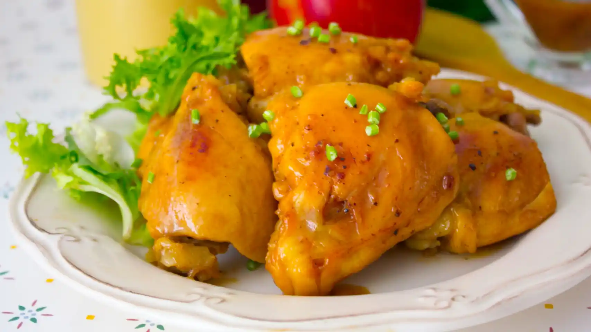

Cocina Casera » recetas con POLLO recetas con POLLO DESCARGA GRATIS NUESTRO EBOOK 📗 10 PLATOS CASEROS QUE NO PUEDEN FALTAR EN TU RECETARIO ¡Quiero mi Ebook Gratis! RECETAS DE POLLO FACILES recetas de pollo para que puedas realizarlas en casa Recetas de pollo. Posiblemente, esta carne sea la más popular del mundo. Este ave es muy sana, económica, alta en proteínas y baja en grasas. Además ofrece mucha versatilidad en la cocina y es apta para todo el mundo, al tratarse de una carne blanca. Espero que disfrutes de estas recetas con pollo que el chef vitoriano Gorka Barredo nos propone.
